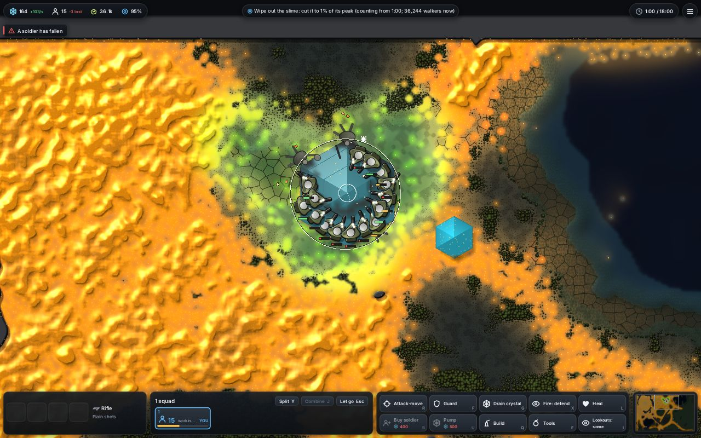
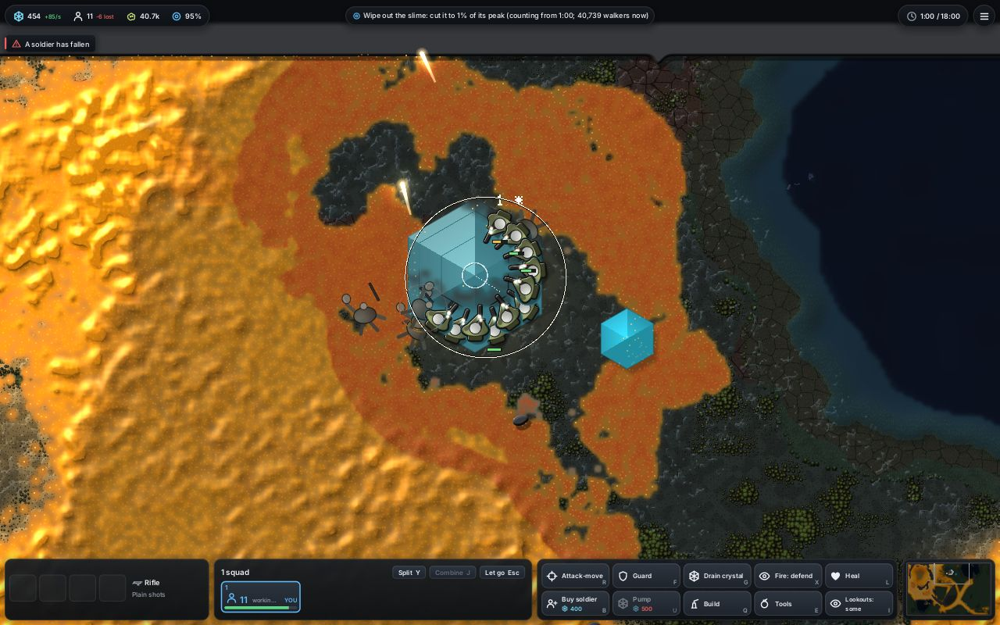
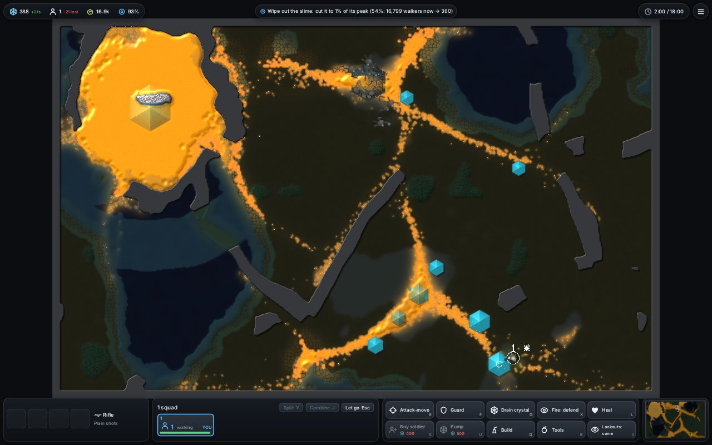
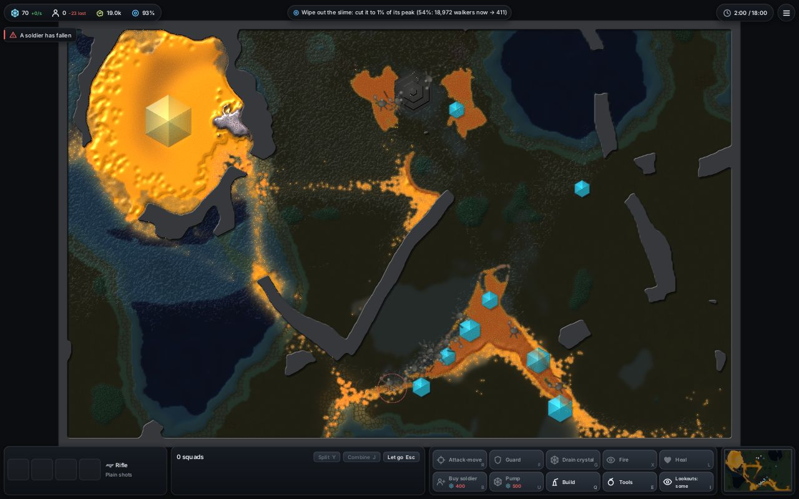
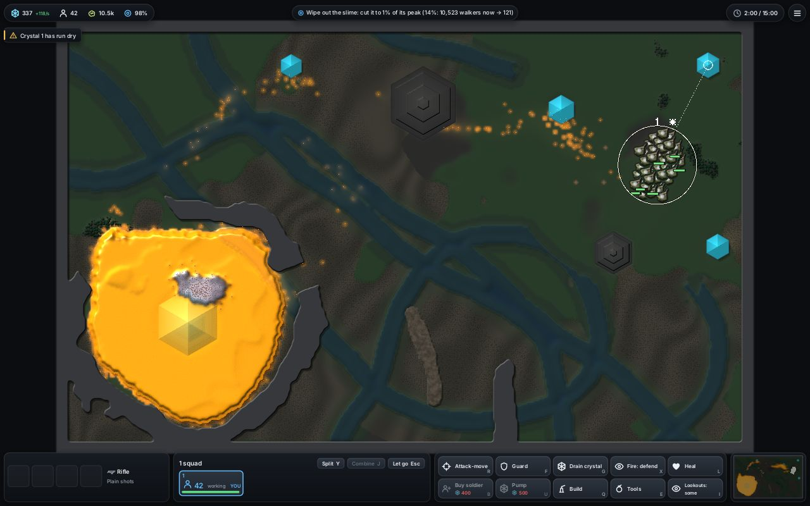
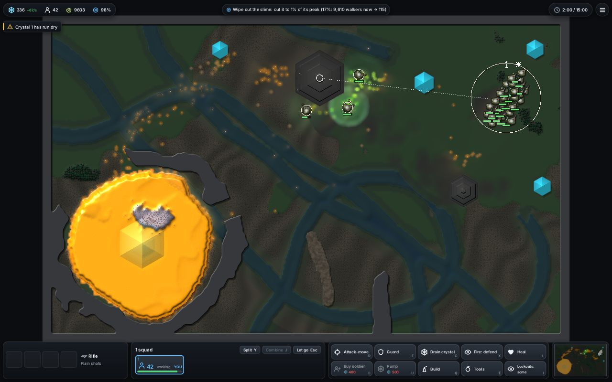
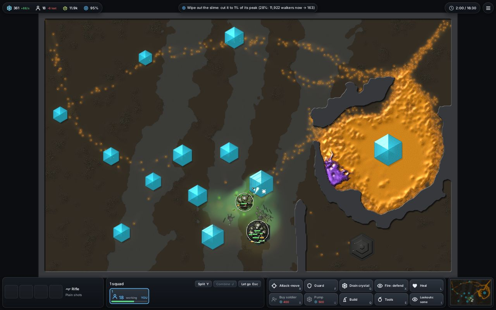
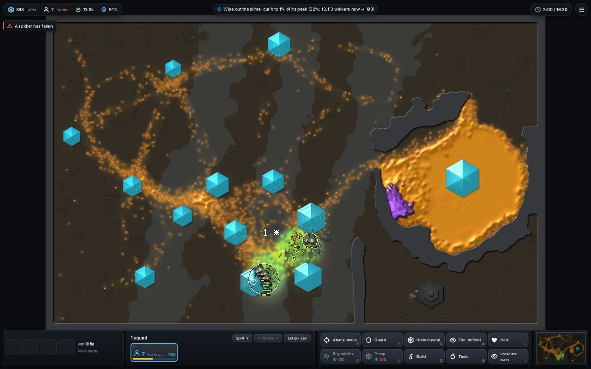

<title>Enemy Switches Settled</title>
<meta name="claude:viewport-fit-sides" content="cover">
<link rel="stylesheet" href="https://fonts.googleapis.com/css2?family=Inter:wght@400;500;600&family=Space+Grotesk:wght@500;600&display=swap">
<style>
/* Layout: one reading column; each film sits beside or above the counts that
   were read off the same game, so no picture stands without its numbers. */
:root {
  --bg: #f3f4f1;
  --panel: #ffffff;
  --ink: #1b2023;
  --muted: #58626a;
  --rule: #d4d8d6;
  --amber: #a85a12;
  --amber-soft: #f4e3cf;
  --off: #5b6f86;
  --off-soft: #e3e9f0;
  --gone: #8a4a44;
  --gone-soft: #f1e0de;
  --display: "Space Grotesk", "Segoe UI", system-ui, sans-serif;
  --body: Inter, "Segoe UI", system-ui, sans-serif;
}
@media (prefers-color-scheme: dark) {
  :root:not([data-theme="light"]) {
    --bg: #14181b; --panel: #1c2226; --ink: #e7eae8; --muted: #9aa5ab; --rule: #313a40;
    --amber: #e8a04d; --amber-soft: #3a2b1a; --off: #9bb3cf; --off-soft: #232e3a;
    --gone: #d59a93; --gone-soft: #3a2624; color-scheme: dark;
  }
}
:root[data-theme="dark"] {
  --bg: #14181b; --panel: #1c2226; --ink: #e7eae8; --muted: #9aa5ab; --rule: #313a40;
  --amber: #e8a04d; --amber-soft: #3a2b1a; --off: #9bb3cf; --off-soft: #232e3a;
  --gone: #d59a93; --gone-soft: #3a2624; color-scheme: dark;
}
body {
  background: var(--bg); color: var(--ink);
  font: 400 16px/1.55 var(--body);
  padding-block: 40px 72px;
  padding-left: max(16px, env(safe-area-inset-left, 0px));
  padding-right: max(16px, env(safe-area-inset-right, 0px));
}
main { max-width: 1040px; margin: 0 auto; display: flex; flex-direction: column; gap: 56px; }
header { display: flex; flex-direction: column; gap: 14px; }
h1 { font: 600 2.1rem/1.15 var(--display); margin: 0; text-wrap: balance; letter-spacing: -0.01em; }
h2 { font: 600 1.4rem/1.25 var(--display); margin: 0; text-wrap: balance; }
h3 { font: 600 0.82rem/1.3 var(--body); margin: 0; text-transform: uppercase; letter-spacing: 0.07em; color: var(--muted); }
p { margin: 0; max-width: 68ch; }
.lede { font-size: 1.1rem; }
.meta { color: var(--muted); font-size: 0.9rem; }
section { display: flex; flex-direction: column; gap: 20px; }
.pair { display: grid; grid-template-columns: repeat(2, minmax(0, 1fr)); gap: 20px; }
.wide { display: grid; grid-template-columns: minmax(0, 3fr) minmax(0, 2fr); gap: 24px; align-items: start; }
@media (max-width: 760px) { .pair, .wide { grid-template-columns: minmax(0, 1fr); } }
figure { margin: 0; display: flex; flex-direction: column; gap: 10px; min-width: 0; }
figure video, figure img { width: 100%; height: auto; display: block; border-radius: 4px; background: #0d1012; }
figcaption { font-size: 0.9rem; color: var(--muted); }
figcaption b { color: var(--ink); font-weight: 600; }
.counts { min-width: 0; display: flex; flex-direction: column; gap: 10px; }
.scroll { overflow-x: auto; }
table { border-collapse: collapse; width: 100%; font-size: 0.9rem; font-variant-numeric: tabular-nums; }
th, td { text-align: right; padding: 6px 10px; border-bottom: 1px solid var(--rule); white-space: nowrap; }
th:first-child, td:first-child { text-align: left; }
thead th { font-weight: 600; color: var(--muted); font-size: 0.8rem; border-bottom-color: var(--muted); }
table.fate td, table.fate th { text-align: left; white-space: normal; vertical-align: top; }
table.fate td:first-child { white-space: nowrap; font-weight: 500; }
.tag { display: inline-block; padding: 1px 8px; border-radius: 3px; font-size: 0.78rem; font-weight: 600; white-space: nowrap; }
.tag.on { background: var(--amber-soft); color: var(--amber); }
.tag.off { background: var(--off-soft); color: var(--off); }
.tag.gone { background: var(--gone-soft); color: var(--gone); }
code { font: 0.86em ui-monospace, "SF Mono", Menlo, Consolas, monospace; }
.see { border-left: 3px solid var(--amber); padding-left: 16px; display: flex; flex-direction: column; gap: 8px; }
.see p { max-width: 72ch; }
ul { margin: 0; padding-left: 20px; display: flex; flex-direction: column; gap: 6px; max-width: 70ch; }
</style>

<main>
<header>
  <h1>The slime's off switches are settled</h1>
  <p class="lede">Fourteen slime features were built and left switched off. Thirteen are now on in the game, one tier's own trait, or deleted. The one you will notice first is on planet 3: the Trunk sets into walls where you shoot it.</p>
  <p class="meta">2026-11-17, the Enemy lane. Every film is run seed 1 on the software GPU, one seed each, so every number is a first number. "Before" is main at d08583d.</p>
</header>

<section>
  <h2>What you will see</h2>
  <div class="see">
    <p><b>Planet 3, the Trunk.</b> Where your shots hit it, the slime stops and hardens into amber slabs. A slab takes three hits a walker instead of one, and your soldiers cannot walk through it, so a move order goes round. Its fed body does not burn. The slabs do. To try it: land on planet 3, hold a squad at a front and fire for half a minute.</p>
    <p><b>Every planet.</b> The slime reaches for crystals it has not touched from across the map, and its charges come round walls instead of piling up against them.</p>
    <p><b>Planet 4, the Swarmer.</b> Cut it to a quarter of its peak and everything it has left rushes your squad, once.</p>
    <p><b>One script.</b> <code>play-new-slime.cmd</code> is gone. <code>play.cmd</code> plays all of this.</p>
  </div>
</section>

<section>
  <h2>Planet 3: the walls form where you shoot</h2>
  <p>Eight rifles hold one spot and fire at the slime coming down on them. The rust-coloured patches at the top are slime that has set. Nothing sets until the squad has been firing for about 25 seconds.</p>
  <div class="wide">
    <figure>
      <video src="walls-zoom6.mp4" autoplay muted loop playsinline controls></video>
      <figcaption><b>Zoom 6, 0:20 to 1:15, eight times real speed.</b> One frame a game second.</figcaption>
    </figure>
    <div class="counts">
      <h3>The same game, by the clock</h3>
      <div class="scroll"><table>
        <thead><tr><th>Time</th><th>Shots</th><th>Killed</th><th>Walkers set</th><th>Wall cells</th></tr></thead>
        <tbody>
          <tr><td>0:20</td><td>41</td><td>130</td><td>0</td><td>0</td></tr>
          <tr><td>0:30</td><td>80</td><td>212</td><td>24</td><td>20</td></tr>
          <tr><td>0:45</td><td>140</td><td>367</td><td>210</td><td>206</td></tr>
          <tr><td>1:00</td><td>233</td><td>973</td><td>460</td><td>453</td></tr>
          <tr><td>1:15</td><td>332</td><td>2,058</td><td>1,143</td><td>1,130</td></tr>
        </tbody>
      </table></div>
      <p class="meta">The slime held 43,365 walkers at 1:15, so under 3% of it had set. A wall cell is ground your soldiers cannot stand on.</p>
    </div>
  </div>
  <figure>
    <video src="fight-zoom12.mp4" autoplay muted loop playsinline controls></video>
    <figcaption><b>Zoom 12, 1:00 to 1:06, real speed.</b> The same game with the camera closer: shots, hits and walkers setting at the front.</figcaption>
  </figure>
</section>

<section>
  <h2>Fire burns the walls</h2>
  <p>At 1:16 two Torch shots land, one on each set patch. The fed body beside them does not catch. In the same game with no fire the wall kept growing.</p>
  <div class="pair">
    <figure>
      <video src="fire-zoom6.mp4" autoplay muted loop playsinline controls></video>
      <figcaption><b>Zoom 6, 1:16 to 1:40, four times real speed.</b></figcaption>
    </figure>
    <figure>
      <video src="fire-zoom12.mp4" autoplay muted loop playsinline controls></video>
      <figcaption><b>Zoom 12, 1:16 to 1:30, twice real speed.</b></figcaption>
    </figure>
  </div>
  <div class="counts">
    <h3>Wall cells with the two Torch shots, and without</h3>
    <div class="scroll"><table>
      <thead><tr><th>Time</th><th>Cells burning</th><th>Wall cells, lit</th><th>Wall cells, no fire</th><th>Walkers set, lit</th></tr></thead>
      <tbody>
        <tr><td>1:16</td><td>0</td><td>1,212</td><td>1,212</td><td>1,225</td></tr>
        <tr><td>1:18</td><td>740</td><td>679</td><td>1,284</td><td>1,332</td></tr>
        <tr><td>1:20</td><td>815</td><td>692</td><td>1,350</td><td>1,432</td></tr>
        <tr><td>1:24</td><td>1,008</td><td>743</td><td>1,485</td><td>1,631</td></tr>
        <tr><td>1:30</td><td>1,239</td><td>812</td><td>1,563</td><td>1,871</td></tr>
        <tr><td>1:40</td><td>1,313</td><td>884</td><td>not filmed</td><td>2,169</td></tr>
      </tbody>
    </table></div>
    <p class="meta">The wall was cut to about half in two seconds. It then grew again slowly, because the squad kept firing and more slime set elsewhere. Planet 3 is the fen, the dampest of the first three, so the crust under the slime is the fuel here.</p>
  </div>
</section>

<section>
  <h2>The rush on planet 3, before and after</h2>
  <p>The scripted rush hand drains crystals and buys soldiers from the first second. It lands inside the slime on this seed. Before, it shot its way through a sheet of slime. Now the slime it shoots sets round it, and by 1:00 the squad stands inside a ring of wall.</p>
  <div class="pair">
    <figure>
      
      <figcaption><b>Before, 1:00.</b> 15 soldiers, health 43. 632 shots killed 7,992. Slime 36,084.</figcaption>
    </figure>
    <figure>
      
      <figcaption><b>After, 1:00.</b> 11 soldiers, health 88. 244 shots killed 3,205. Slime 40,749, of which 5,327 set (4,800 wall cells).</figcaption>
    </figure>
    <figure>
      
      <figcaption><b>Before, 2:00.</b> 1 soldier left. Slime 16,866.</figcaption>
    </figure>
    <figure>
      
      <figcaption><b>After, 2:00.</b> No soldiers left. Slime 18,984, of which 9,831 set.</figcaption>
    </figure>
  </div>
  <p class="meta">In both games the first raid, at 1:12, is what ends the squad. The walls did not save it and did not kill it: they more than halved what its shots killed (3,205 against 7,992 by 1:00) and kept its health up while they stood (88 against 43).</p>
</section>

<section>
  <h2>Planets 1 and 2 with the far smell and the charge paths on</h2>
  <p>The same rush hand at 2:00. On planet 1 it still ends with 42 soldiers. On planet 2 it ended with 7 instead of 18.</p>
  <div class="pair">
    <figure>
      
      <figcaption><b>Planet 1 before.</b> 42 soldiers, health 97. Killed 1,318. Slime 10,523.</figcaption>
    </figure>
    <figure>
      
      <figcaption><b>Planet 1 after.</b> 42 soldiers, health 90. Killed 3,283. Slime 9,603.</figcaption>
    </figure>
    <figure>
      
      <figcaption><b>Planet 2 before.</b> 18 soldiers, health 63. Killed 10,717. Slime 11,903.</figcaption>
    </figure>
    <figure>
      
      <figcaption><b>Planet 2 after.</b> 7 soldiers, health 47. Killed 16,157. Slime 13,034.</figcaption>
    </figure>
  </div>
  <p class="meta">One film each, so the planet 2 gap may be this seed. Planet 1 still does nothing to a rush: that is the next job, with no rush brake in it.</p>
</section>

<section>
  <h2>What became of each switch</h2>
  <div class="scroll"><table class="fate">
    <thead><tr><th>Switch</th><th>Now</th><th>Where</th></tr></thead>
    <tbody>
      <tr><td>A far smell</td><td><span class="tag on">On</span></td><td>Every run planet.</td></tr>
      <tr><td>Charges round walls</td><td><span class="tag on">On</span></td><td>Every run planet.</td></tr>
      <tr><td>Crust</td><td><span class="tag on">Trait</span></td><td>The Trunk, planet 3. Setting needs it, and it is what burns.</td></tr>
      <tr><td>Crust pull and fast ground</td><td><span class="tag on">Trait</span></td><td>The Trunk, at +8: it keeps to ground it has held. With and without the pull the idle slime ate the same and looked the same at 3:00 (37,758 walkers against 33,784).</td></tr>
      <tr><td>Setting</td><td><span class="tag on">Trait</span></td><td>The Trunk.</td></tr>
      <tr><td>Set slime blocks soldiers</td><td><span class="tag on">Trait</span></td><td>The Trunk. You ruled that bulwarks block both shots and soldiers.</td></tr>
      <tr><td>Set slime traps soldiers</td><td><span class="tag gone">Deleted</span></td><td>The other side of block or trap. Orders walked a squad straight through a trap; they go round a wall.</td></tr>
      <tr><td>Set slime's look</td><td><span class="tag on">On</span></td><td>Amber is what the game draws. Any change to it is Look and interface's.</td></tr>
      <tr><td>Fed slime fireproof</td><td><span class="tag on">Trait</span></td><td>The Trunk.</td></tr>
      <tr><td>Last stand</td><td><span class="tag on">Trait</span></td><td>The Swarmer, planet 4. Not filmed: no scripted hand cuts a Swarmer to a quarter.</td></tr>
      <tr><td>Reserve recruit</td><td><span class="tag on">Kept</span></td><td>It turned out not to be a switch. It is the old campaign's rule that gives a free soldier 20 s after your last one dies, and the run never used it.</td></tr>
      <tr><td>Lossy flow</td><td><span class="tag gone">Deleted</span></td><td>From the GPU game. The old CPU engine is left as it is.</td></tr>
      <tr><td>Lone step</td><td><span class="tag gone">Deleted</span></td><td>From the GPU game, the same way.</td></tr>
      <tr><td>Crystals that refill</td><td><span class="tag off">Off</span></td><td>It belongs to your answer on the rush (D7).</td></tr>
    </tbody>
  </table></div>
</section>

<section>
  <h2>What this does not show</h2>
  <ul>
    <li>Nothing here was timed on the GTX 1070. The software GPU says nothing about frame rate.</li>
    <li>Every count is one seed. Planet 2's drop from 18 soldiers to 7 is not a finding yet.</li>
    <li>The Swarmer's last stand has tests and no film.</li>
    <li>The wall's numbers (five set walkers a cell, three hits, the pull at +8) are first numbers.</li>
  </ul>
</section>
</main>
